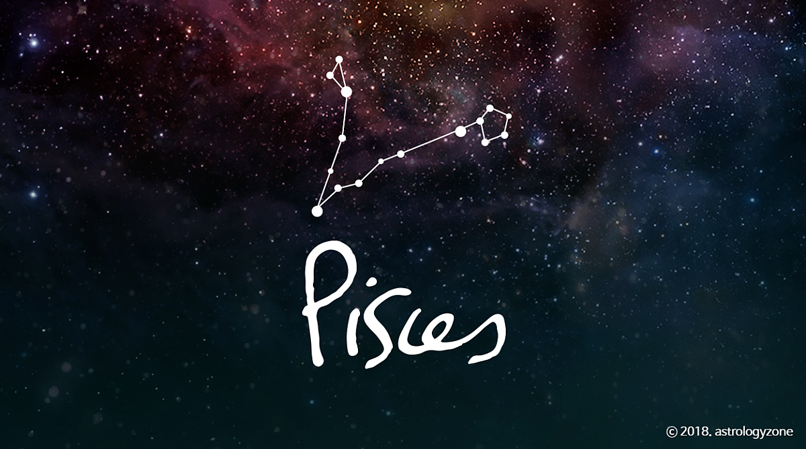

Pisces (물고기자리)
황도 12궁의 제 12궁
2월 19일 ~ 3월 20일
황도 12궁의 열두 번째 별자리이며, 수호성은 목성이다.
성도상에서는 끈 하나가 물고기 2마리를 이은 모습으로 그린다. 크기 자체는 대형 성좌에 속하지만 밝은 별이 적고, 그나마 가장 밝은 것도 4등성이어서 발견하기가 어려운 별자리이다.
보통 천문도에는 물고기 두 마리가 각각 끈 같은 것에 묶여있는 모습으로 묘사가 되어서 물고기라고 하기에는 다소 억지스러워 보이는데,
다른 별자리에 비하면 오히려 정확한 묘사다. 왜냐하면 이 별자리 자체가 바로 메소포타미아, 즉 '두 강 사이의 땅'을 의미하기 때문이다.
경우에 따라 물고기 사이에 마름모 모양의 땅을 그려넣기도 하였는데 이 땅이 바로 메소포타미아다. 이 마름모가 이후에 따로 페가수스 자리가 되었다는 설도 있다.
그리스 신화에서는 아프로디테의 아들 에로스가 괴물 티폰에게 쫓기던 도중 변신한 모습으로 여겨지고 있다.
이 때 함께 나일강에 뛰어들며 변신한 어머니 아프로디테와 서로를 놓치지 않으려고 끈으로 이은 모습이다. 이것을 아프로디테가 하늘에 기념하여 물고기자리로 바꿨다고 한다.